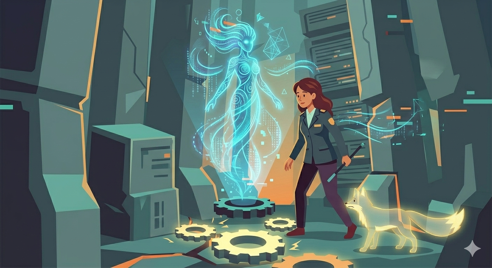

Quick Cyber Safety Tips

Protecting yourself online shouldn't have to be so difficult. In fact, small and consistent habits can make a big difference in our life.
Here are some quick and important cyber safety tips that we can apply in our daily online activities:
Think Before You Click
Not all links are safe and can be trusted. Take a moment to double check first before clicking, whether the link comes from an email, message, or social media post. If it is something unusual, it's best not to open it.
Create Strong and Unique Passwords
Make passwords that are difficult to guess by combining letters, numbers, and symbols. It will be better not to use the same password across multiple accounts to prevent hackers from accessing everything at once.
Turn On Extra Security
Enable features like two-factor authentication, if possible. This can add another layer of security by requiring a second verification step before it allows you to log in.
Keep Your Devices Updated
Do not ignore notifications wherein it requires you to update your apps, software, and devices because it does matter. It might be annoying, but it helps in fixing security problems and protects you from possible risks.
Be Careful with What You Share
Sharing too much personal information on social media can put you at risk. Even simple details about the things you like and what you usually do can be used by wrong people. It is very important to pause and think first before posting anything.
Be Careful with Public Wi-Fi
It is very convenient if there is free Wi-Fi especially when you are outside, but it is not always safe. Public networks can easily be accessed by others which means that your personal information is not safe. Avoid opening important accounts especially bank apps when you're connected to public networks.
Always Log Out on Shared Devices
Make it a habit and always check if you have logged out of a device that is not yours. It seems like a small step, but it's to protect you and prevent others from getting access to your information.
Don't Trust Unknown Messages
Always be cautious of messages you receive from unknown senders especially if it contain links and is routing you to sign in or claim anything. These are fraudulent acts and might further ask for personal information, money, and might also act as someone you knew. If something feels off in the message, just delete and ignore it.
Quick Reminder
It doesn't require you to be an expert or skilled to stay safe online. Most of it just comes down to being careful, alert, and being responsible with whatever activity you do online.
Real-World Application
.png)
In today's digital lifestyle, practicing simple cyber safety habits can make a big difference in protecting personal information. In the Philippines, many online incidents could have been avoided if users followed basic precautions such as creating strong passwords, enabling two-factor authentication, and avoiding suspicious links. These small but consistent actions serve as the first line of defense against common online threats.
According to the Department of Information and Communications Technology, users are encouraged to regularly update their passwords, verify the legitimacy of websites, and be cautious when using public Wi-Fi networks. Reports and advisories have shown that individuals who neglect these practices are more vulnerable to hacking, identity theft, and financial loss. By applying these quick safety tips in everyday online activities, users can significantly reduce their risk and maintain better control over their digital security.
Author's Reflection
Writing about cyber safety made me realize how easy it is to overlook the small habits that protect us online. I thought about my own experiences—how I sometimes almost clicked suspicious links, reused passwords, or connected to public Wi-Fi without caution. These moments reminded me that even simple carelessness can have real consequences, like stolen accounts or personal information being exposed. It made me see that staying safe online isn't about being a tech expert; it's about awareness, responsibility, and consistently practicing small, smart habits.
I also learned that these actions don't just protect us—they give peace of mind. Pausing before sharing personal info, double-checking links, logging out of shared devices, or turning on extra security may seem minor, but they add up to real protection. Reflecting on this made me feel more empowered to take control of my own digital life. I hope these tips inspire others to do the same, because staying safe online isn't just about technology—it's about valuing your privacy, your accounts, and ultimately, yourself.
"The internet may be limitless—but your awareness is your greatest protection"
-Denise Angelique Ofrasio